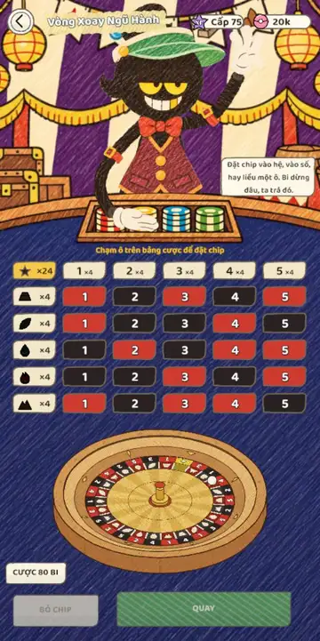
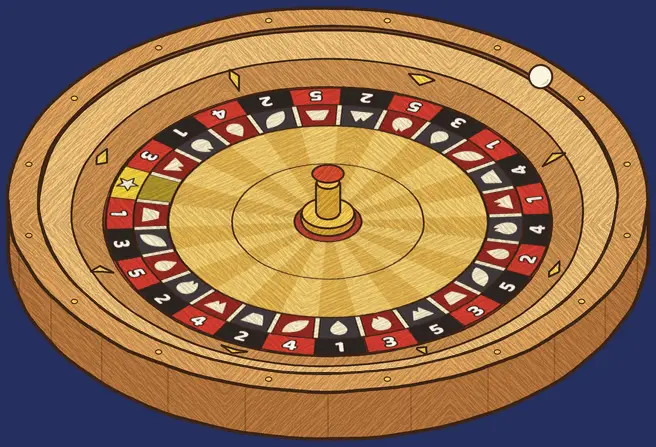
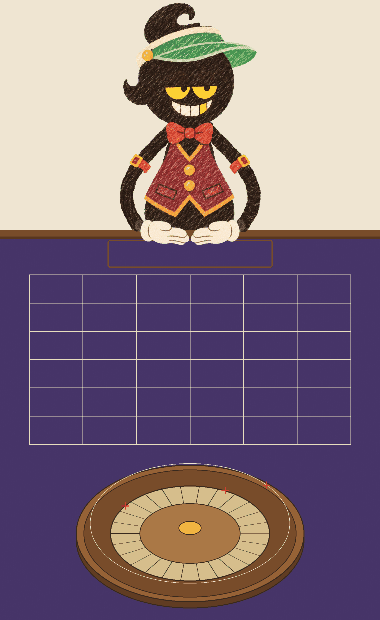
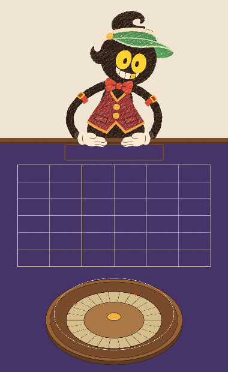
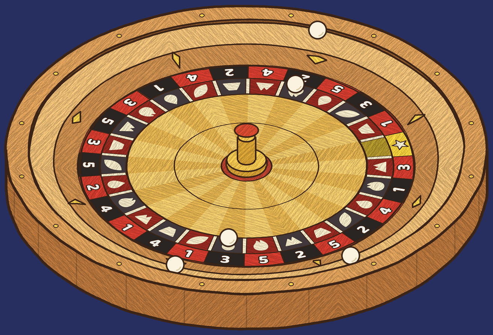
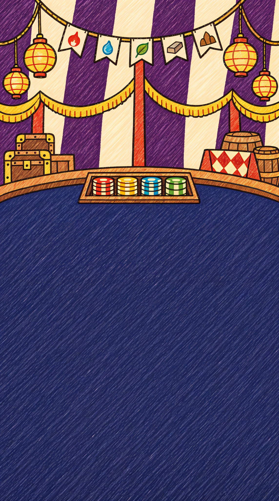

D4: lều Vòng Xoay Ngũ Hành có Lão Mực (2026-11-26)
Ô ra do lõi chọn theo tỉ lệ trong cấu hình; viên bi lăn bằng mô phỏng vật lý và được chọn cú thả cho nằm đúng ô đó.
Chạy trong game (lượt chụp 20 khung/giây, ba vòng)

Bản đỏ đen. Vòng 1 miễn phí trúng 3 cửa (Hỏa 3) · vòng 2 trượt hết, Lão Mực vơ chip · vòng 3 trúng Sao Vàng.

Một cú thả bi (mô phỏng ngoài Unity, cùng hình bánh xe của game): chạy quanh vách, rơi xuống, va mấu chắn, nảy qua vách ngăn, nằm vào ô.
Năm clip mới của Lão Mực (nền, bàn, bánh xe trong ảnh chỉ vẽ tạm)

rl_invite: mời đặt cửa
rl_no_more: hết đặt
rl_spin: vươn tay quất mâm, rồi ném bi

rl_watch: dõi theo bi (game kéo thời gian theo góc bi)
rl_point: chỉ ô ra
Hình

Bánh xe vẽ bằng mã, khớp hình học của mô phỏng (26 ô đỏ / đen + Sao Vàng, 8 mấu chắn; hệ ghi bằng biểu tượng trong ô).

Nền lều (Magnific GPT 2.6).